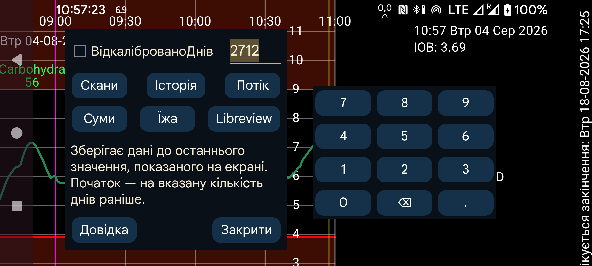

ar be de es hi it ja nl pl ru tr uk uz zh en

Експортує дані з Juggluco у файл.
Прийоми їжі зберігаються у форматі HTML. Усі інші дані — у форматі .tsv (Значення, розділені табуляцією). Такі файли можна відкрити в LibreOffice Calc, Microsoft Excel, Mathematica або R. Це різновид .csv, у якому елементи розділяються табуляцією, а не комами. Використовується кодування UTF-8.
Значення стовпців можна знайти на https://www.juggluco.nl/Juggluco/webserver.html.
Днів: починаючи з Juggluco 7.1.0 можна вибрати кількість днів для збереження. Кінцева дата відповідає правій межі екрана. Тому якщо в Juggluco відкрито минулі дані, експортуватимуться лише давні дані — так само, як у лівому середньому меню→Статистика.
Відкалібровано: зберігати калібровані значення. За цього параметра Скани, Потік і Історія містять для кожного елемента і каліброване, і необроблене значення. У форматі LibreView зберігається лише каліброване значення, якщо воно доступне, інакше — некаліброване.
Починаючи з Juggluco 7.1.0 ці дані також можна отримувати через вебсервер Juggluco: ліве меню→Налаштування→Обмін даними→Вебсервер. Див. https://www.juggluco.nl/Juggluco/webserver.html
LibreView: зберігати дані у форматі LibreView. Це робитьможливим імпорт даних із датчиків, відмінних від FreeStyle Libre, у програми й вебслужби, які потребують цього формату. Для датчиків Dexcom зберігаються п’ятихвилинні значення, а для Sibionics — одне потокове значення кожні 5 хвилин. Також зберігаються історичні значення датчиків Libre 0, 2 і 3. Дози інсуліну, вуглеводи й примітки зберігатимуться лише після того, як ви призначите міткицим категоріям через ліве меню→Налашт.→Обмін даними→Libreview→Відправити суми.